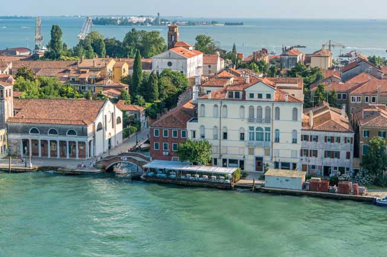
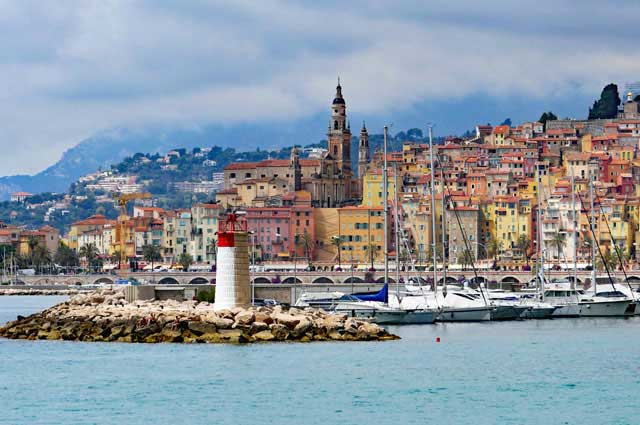

Toggle navigation
斑马
首页
游记攻略
个人页面
景区
Contact
热门景区推荐
广州
【小蛮腰】
广州塔的别称，位于中国广州市海珠区阅江西路222号，城市新中轴线与珠江景观轴交汇处， 与海心沙岛和
广州市中央商务区，珠江新城隔江相望。广州塔塔身主体高454米 ，天线桅杆高146米 ，总高度600米 。
上海
【迪士尼乐园】

上海人称的本帮菜指的是上海本地风味的菜肴，特色可有用浓油赤酱（油多味浓、糖重、色艳）概括。常
用的烹调方法以红烧、煨、糖为主，品味咸中带甜，油而不腻。本帮炒菜中，荤菜中特色菜有响油鳝糊、
油爆河虾、油酱毛蟹、锅烧河鳗、红烧圈子、佛手肚膛、红烧回鱼、黄焖栗子鸡等，真正体现本帮菜浓油
赤酱的特点。上海蔬菜按季节不同有各种时令菜。马兰头、荠菜、鸡毛菜、上海小油菜等都非常清爽。
市民早点——四大金刚：大饼、油条、粢饭、豆腐浆。
香港
【海洋公园】
香港汇聚了世界各地的美食，香港旺角、铜锣湾、尖沙咀东部和九龙城等地有些街道尽是食肆。充满亚洲
风味的餐馆遍布香港，辛辣的泰国汤、香浓的印度咖喱、韩国烧烤、越南沙律卷、日本寿司等等特色美食。
香港的中国菜餐馆，提供中国各地的特色佳肴，广东菜餐馆尤其多，其他地道菜包括潮州菜、湖南菜、四川
菜、北京菜、上海菜等，还有讲究素淡的素菜。还有以传统的广式点心作早餐的饮茶。
杭州
【西湖】

杭帮菜隶属中国八大菜系的浙菜，以“清爽别致”闻名，尤其注重一个“鲜”字。由于生活在气候宜人的江
南水乡，杭城人口味偏清淡。因此，杭帮菜更注重选料时鲜、保留食材的原汁原味，烹饪时轻油轻调料。
杭帮菜虽清淡，却绝不是寡淡无味，而是鲜咸合一，捎带甜味。宋代大诗人苏东坡曾盛赞“天下酒宴之盛，
未有如杭城也”，且有“闻香下马”的典故。
江苏
【乌镇】
江苏拥有丰富的旅游资源，自然景观与人文景观交相 辉映，有小桥流水人家的古镇水乡，有众口颂
传的千年名刹，有精巧雅致的古典园林，有烟波浩渺的湖光山色，有规模宏大的帝王陵寝，有雄伟壮
观的都城遗址，纤巧清秀与粗犷雄浑交汇融合，可谓是“吴韵汉风，各擅所长”。